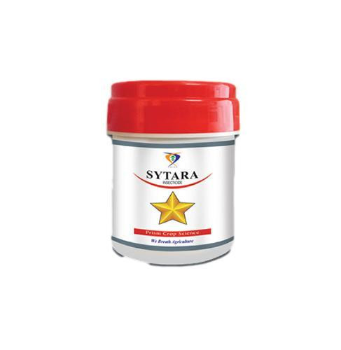

Technical Name: THIAMETHOXAM 25% WG
Mode of Action: Systemic insecticide with both contact and stomach action. Exhibits translaminar activity, protecting both sides of the leaf surface. Long-lasting effect and economical due to low recommended dosages. Also used for seed treatment in other formulations.
Major Crops: Cotton, Vegetables, Groundnut, Grapes, etc.
Target Pest: Hopper, Aphids, Leaf Miners, Mealybugs, Whiteflies, Jassids, etc.
Dose/Acre: 40 g to 60 g per acre
Presentation Available: 100 g, 250 g, 500 g, 1 kg
Company: Prism